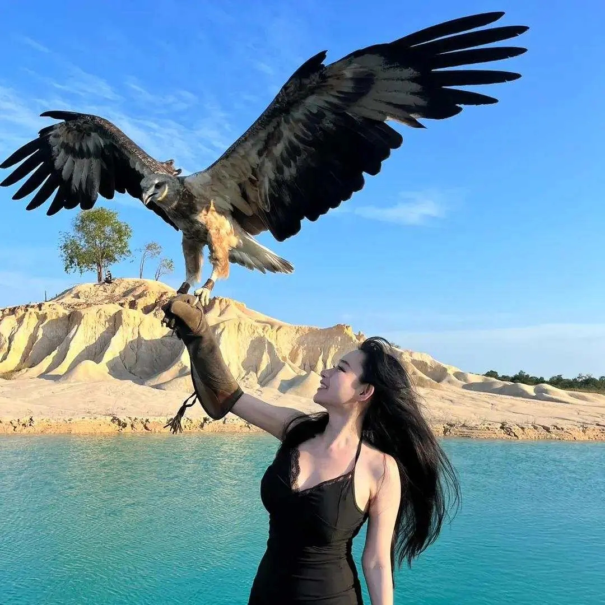

Lives with intention — drawn to beauty, obsessed with growth, and unwilling to settle for mediocrity.
Believing that beauty and purpose are found in everyday things, and that real work creates real value.
I want to create things that matter, work that reflects who I am, and a life that feels like mine.
My Journey
Singapore Management University (SMU)
Aug 2017 – Nov 2020My journey to Singapore was a leap of faith, leaving behind the familiarity of China to step into a world full of unknowns. SMU was where I truly discovered what it means to push boundaries and explore new opportunities. Being surrounded by brilliant professors and motivated peers raised the bar for me every day.
It wasn't just about academics; it was about self-discovery, leadership, and embracing a global perspective. I immersed myself in extracurriculars, led an interest group, volunteered abroad, and even published a research paper. SMU helped shape my mindset to think critically, lead with purpose, and seize the opportunities that come my way. This was where my foundation was laid, and I graduated ready to take on the world.
ByteDance
Apr 2024 – PresentJoining ByteDance was like diving into the deep end of the tech world. It's one of the fastest-growing companies out there, and the opportunity to be part of that growth has been a game-changer. Here, I've adopted a start-up mindset, learning how to pivot quickly, think on my feet, and navigate an ever-evolving environment.
The people at ByteDance are visionaries, constantly pushing the envelope on what's possible. Being surrounded by this level of ambition and innovation has helped me grow in ways I never expected. It's where I learned to tackle big challenges and think creatively, and I've taken that mindset with me in everything I do.
JPMorgan Chase
Nov 2022 – Apr 2023JPMorgan Chase was where I really learned how to thrive under pressure. The environment was fast-paced, high-stakes, and full of people who are at the top of their game. The exposure to real-world security threats and the need to act swiftly taught me the value of agility and precision.
It was here that I learned the importance of staying calm in the chaos and finding solutions in moments of uncertainty. The people I worked with were some of the smartest in the industry, and they pushed me to constantly elevate my standards. What I gained from this experience wasn't just technical know-how; it was the confidence and resilience to take on any challenge.
UBS
Jan 2021 – Oct 2022UBS was where my career truly began. As my first full-time role, it offered me the chance to rotate across different teams, each one providing a unique set of challenges and learning opportunities. From day one, I was surrounded by professionals who held themselves to the highest standards, and that set the tone for my own growth.
The program exposed me to diverse roles, from cybersecurity to business analytics, giving me a broad skill set and a deeper understanding of the tech and finance world. What stands out the most is the culture of continuous learning and the drive for excellence that everyone around me exhibited. It was the perfect place to start my career and a place I'll always look back on with gratitude.
Projects
League of Agents
An innovative initiative focused on the intersection of Web3, AI, and cybersecurity. The project leverages the power of decentralized systems to enhance security in AI-driven ecosystems, offering a comprehensive solution for detecting and mitigating threats in real time.
The League of Agents project aims to create a community-driven platform where users can collaborate on AI security challenges.
Women in Cybersecurity Awareness
An upcoming project dedicated to raising awareness about cybersecurity among women in China. This initiative seeks to inspire more women to pursue careers in cybersecurity by utilizing social media platforms to share knowledge, success stories, and educational resources.
Social Media Campaign
Focused on Chinese social media platforms (WeChat, Weibo) to educate and empower women with cybersecurity knowledge.
Educational Resources
Development of free content aimed at introducing cybersecurity basics to a broad audience.